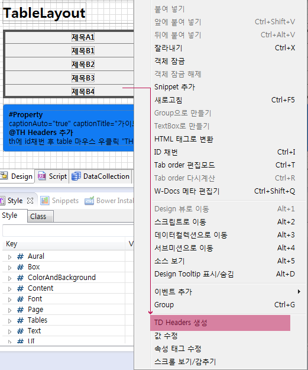
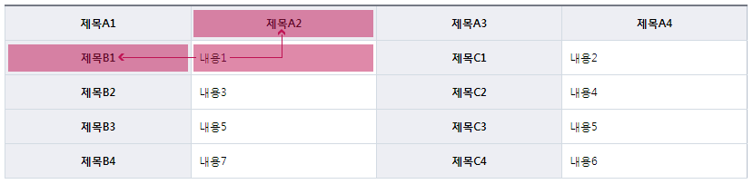
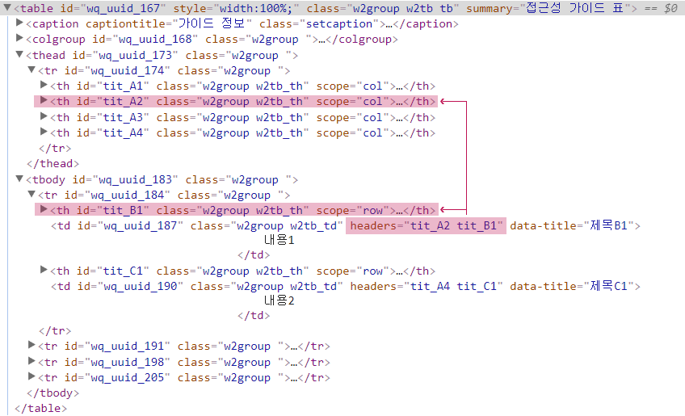

27.TableLayout
27.1TableLayout
TableLayout 컴포넌트를 디자인뷰에 그리면 생성창이 나오는데 거기서 Use Thead/Tbody/Tfoot를 선택하고 Thead의 추가하고 싶은 행수, Tbody의 추가하고 싶은 행수를 적어주면 된다.
그리고 헤더를 원하는 형태로 선택한다. 참고로 파란색으로 된부분은 th로 보여준다. 생성방식은 Websquare Group방식과 HTML방식 두가지가 있는데 WebSquare Group모드(default 모드)로 생성하면 Group컴포넌트의 API를 사용할 수 있다. HTML로 생성하는 경우는 Table내의 내용이 변경없이 정보만 전달할 목적으로 사용한다. Source창에서 html형식으로 작성한다. 그리고 제목(caption), 요약(summary)를 적어준다.
thead의 th는 scope="col", tbody의 th는 scope="row"를 적용합니다.
HTML5에서 summary는 지원을 하지 않습니다.
그래서 html5로 마크업을 하고 validator를 체크하면 오류로 분류됩니다. html5에서 summary 속성을 사용하지 않기를 권하는 이유는 현실적으로 그 내용을 이해하는 사람이 거의 없기 때문입니다.
웹접근성 마크를 준비중이면 summary 넣어주셔야 할 듯 합니다.
√ tableLayout 생성시 제목(caption), 요약(summary)은 적절히 서술했는가?
√ thead를 사용해서 th를 생성시켰으면 html attributes에서 scope="col"은 적용했는가?
√ thead를 사용해서 th를 생성시켰으면 html attributes에서 scope="row"은 적용했는가?
<XML Source>
<xf:group tagname="table" style="width:100%;" id="" class="w2tb"> <w2:attributes> <w2:summary><![CDATA[table 설명을 적어주세요]]></w2:summary> </w2:attributes> <xf:group tagname="caption">table의 제목</xf:group> <xf:group tagname="colgroup"> <xf:group tagname="col" style="width:25.00%;"></xf:group> <xf:group tagname="col" style="width:25.00%;"></xf:group> <xf:group tagname="col" style="width:25.00%;"></xf:group> <xf:group tagname="col" style="width:25.00%;"></xf:group> </xf:group> <xf:group tagname="thead"> <xf:group tagname="tr" style=""> <xf:group tagname="th" style="" class="w2tb_th"> <w2:attributes> <w2:scope>col</w2:scope> </w2:attributes> 제목1 </xf:group> <xf:group tagname="th" style="" class="w2tb_th"> <w2:attributes> <w2:scope>col</w2:scope> </w2:attributes> 제목2 </xf:group> <xf:group tagname="th" style="" class="w2tb_th"> <w2:attributes> <w2:scope>col</w2:scope> </w2:attributes> 제목3 </xf:group> <xf:group tagname="th" style="" class="w2tb_th"> <w2:attributes> <w2:scope>col</w2:scope> </w2:attributes> 제목4 </xf:group> </xf:group> </xf:group> <xf:group tagname="tbody"> <xf:group tagname="tr" style=""> <xf:group tagname="td" style="" class="w2tb_td">내용1</xf:group> <xf:group tagname="td" style="" class="w2tb_td">내용2</xf:group> <xf:group tagname="td" style="" class="w2tb_td">내용3</xf:group> <xf:group tagname="td" style="" class="w2tb_td">내용4</xf:group> </xf:group> </xf:group> </xf:group>
27.2TD Headers생성 하기
복잡한 header로 구성된 table의 경우 headers를 적용해야 하는 경우가 있습니다. 이 때 제목열과 내용열을 묶어서 화면낭독기(센스리더) 에서 순차적 으로 낭독 할 수 있게 가이드 하는 기능 입니다.
27.2.1TD headers 적용 예시
th에 id채번 후 table 마우스 우클릭 "TD Headers생성" 선택!!
※ id변경 시 반복
Table선택 후 마우스 우클릭

[그림 27-1]headers02
적용시 th참조 예시(제목A2 -> 제목B1 -> 내용1)

[그림 27-2]headers01

[그림 27-3]headers_result